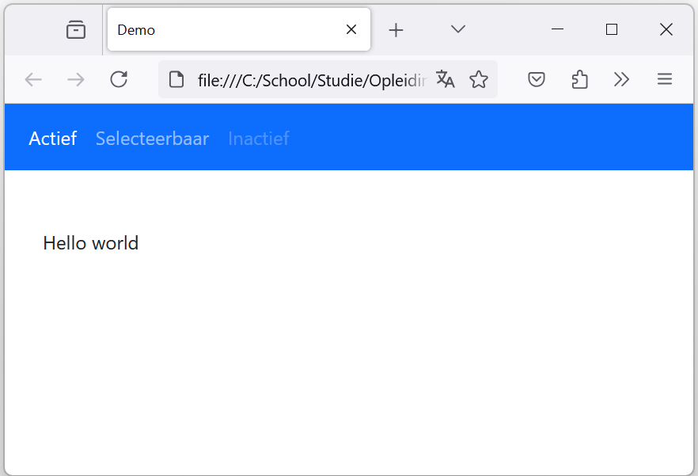

Menubalk
Stap 1
Het is mogelijk om een menubalk te maken met de optie navbar. Binnen de menubalk is het vervolgens mogelijk om knoppen te maken met navbar-nav en navbar-item. Hieronder staat de gebruikte code voor een standaard menubalk met verschillende instellingen per menu-item. Voeg deze code toe bovenaan in de body van een html document om die toe te voegen aan de html-pagina.
<nav class="navbar navbar-expand-sm bg-primary navbar-dark">
<div class="container-fluid">
<ul class="navbar-nav">
<li class="nav-item">
<a class="nav-link active" href="#">Actief</a>
</li>
<li class="nav-item">
<a class="nav-link" href="#">Selecteerbaar</a>
</li>
<li class="nav-item">
<a class="nav-link inactive" href="#">Inactief</a>
</li>
</ul>
</div>
</nav>

In deze code zijn de volgende attributen gebruikt:
- navbar-expand-sm: Dit zorgt ervoor dat de menu balk verticaal uitklapt als het venster te klein wordt. (bijv. een mobiel)
- bg-primary: Dit zorgt ervoor dat de achtergrond van de navbar de kleur primary krijgt. Standaard is dat blauw.
- navbar-dark: Hiermee verandert de kleur van de font van tekst naar een bepaald thema, in dit geval dark.
- navbar-nav: Dit is een lijst met nav-items gemaakt voor de navbar. Hiermee is het mogelijk om knoppen op de menubalk te maken.
- active / disabled: Hiermee kan een menu knop oplichten of uitgeschakeld worden.